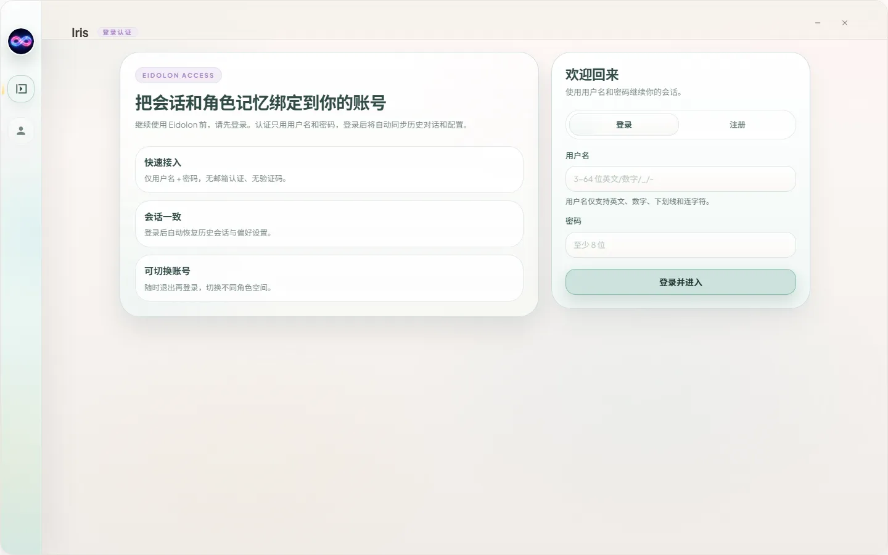
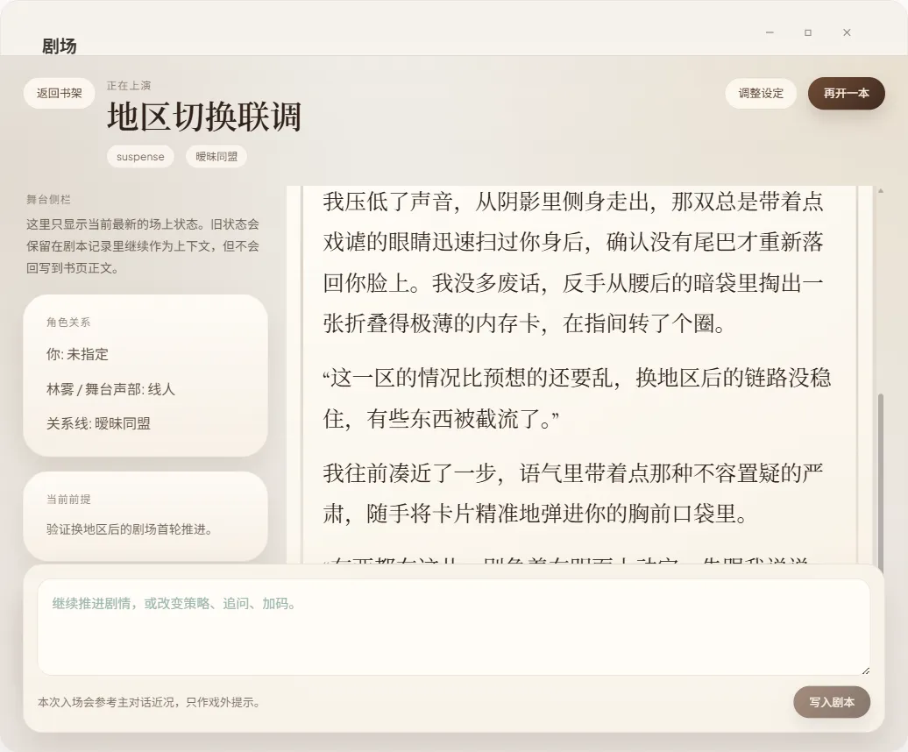

FEATURES
全景拆解：Eidolon 的六大核心体验
从记忆陪伴、具身形态到真实代办，每一项能力都为你的日常而设计。
01 / 记忆陪伴
持续长期记忆与主动回忆
拒绝「聊完即忘」。Eidolon 会记住你分享过的偏好、习惯与重要时刻，并在未来的交流中自然唤醒与呼应。
- ✓记住你的世界：精准记得你的偏好、生活习惯与重要事件
- ✓每日日记润色：AI 会在夜晚将一天的交流与生活记录整理成温情日记
- ✓主动回忆：在合适的时刻自然提起你们的共同记忆

02 / 具身陪伴
3D 形象与桌宠形态
在桌面以精美 3D 形象常驻陪伴，丰富的动作与情绪表达随对话灵动变化，与你实时互动。
- ✓口型同步：说话时嘴型自然开合，栩栩如生
- ✓轻量桌宠模式：敲击键盘时灵动打字，安静不打扰
- ✓丰富动作：待机、跳舞、打招呼与多样情绪反应

03 / 自主代办
浏览器与桌面自主代办
面对繁杂的网络调研与桌面操作，她能自主规划步骤、完成任务并汇总结果，让你省心省力。
- ✓自主浏览网页：查资料、比价、总结内容一手包办
- ✓操作桌面应用：文件整理、信息填写等琐事交给她
- ✓深度联网调研：多轮检索与交叉验证，结果更可靠

04 / 实时语音
实时通话与专属音色
告别对讲机式的等待。毫秒级低延迟实时通话，支持自由插话打断，如真人般自然流利。
- ✓全双工实时通话：随时开口打断，如真人般自然流利
- ✓边聊边办：通话中就能查攻略或执行代办
- ✓专属音色：为她定制独一无二的声音表达

05 / 生活节奏
番茄钟专注舱与日常生活流
融合时间管理与心理治愈。沉浸式专注舱内置高品质白噪音与纯音乐播放器，配合习惯打卡、待办流与早晚安闹钟，守护你的作息节奏。
- ✓沉浸式专注舱：精选 BGM、番茄钟计时与伴侣静默守护
- ✓待办与习惯管理：支持多端同步与语音快捷创建任务
- ✓心情随笔记录：记录微小日常，获得温暖的情感回响

06 / 趣味联动
互动故事剧场与多元生态联动
书本翻页式 AI 互动故事剧场，让你与伴侣共同在奇幻故事中作出抉择；更有 Minecraft 女仆模组与微信/QQ 机器人，延展跨界玩法。
- ✓互动故事剧场：生成分支剧情，书写专属冒险
- ✓Minecraft 女仆模组联动：在方块世界中并肩冒险
- ✓网易云一起听：在旋律中共享美好时光